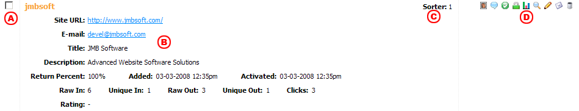

The main function of ToplistX is to maintain a database of member accounts and track their stats, so it is obviously important to understand how the software handles them. This document will give you an overview of how to add, maintain, and remove accounts.
Searching Accounts
To search the current accounts in your database so you can modify or delete them, access the Accounts > Search Accounts function from the control panel menu. This will display a page where you will be able select a number of different search options so you can quickly locate the account(s) you want to work with. Most of the database fields that you can search use the software's Standard Search function, however the Title, Description & Keywords field uses the Boolean Search feature. The When you perform a search, the accounts that match your search terms will be displayed like the following example:

- Use this checkbox to select this account when you want to run a function on multiple accounts at once
- This section displays the account's current settings.
- This is the value that the current search results were sorted by
- These are the functions that you can run on this specific account

|
Click this icon to view the banner assigned to the account. The banner will display as a floating element that you can click on to close. |

|
Click this icon view the surfer comments for this account. |

|
Click this icon to disable this account (only shows when the account is enabled) |

|
Click this icon to enable this account (only shows when the account is disabled) |

|
Click this icon to lock this account (only shows when the account is unlocked) |

|
Click this icon to unlock this account (only shows when the account is locked) |

|
Click this icon to view the stats for this account. A window eill appear showing the account stats. |

|
Click this icon to scan the account. A window will appear showing you the scan results. |

|
Click this icon to edit the account. A window will appear where you will be able to edit all of the account settings. |

|
Click this icon to send an e-mail to the account submitter. A window will appear where you will enter the e-mail text. |

|
Click this icon to delete this account. |
| Delete | Use this function to bulk delete accounts |
| Use this function to bulk e-mail account submitters. A window will appear where you will be able to enter the e-mail text. | |
| Approve | Use this function to bulk approve accounts; the email-account-added.tpl e-mail message will be sent if you have that option enabled |
| Reject | Use this function to bulk reject accounts. The rejection e-mail you have selected for each account (if any) will be sent. |
Adding a New Account
To add a new account access the Accounts > Add Account function from the control panel menu. This will display a popup window where you will be able to enter the account data that you want to use. Each of the form fields are described below.
| Username | The username that should be associated with this account |
| Password | The password that should be associated with this account |
| E-mail Address | The e-mail address that should be associated with this account |
| Site URL | The base URL of the website associated with the account |
| Site Title | The title/name of the website |
| Description | A detailed description of the website |
| Keywords | A space separated list of keywords that describe the website. Keywords must be at least 4 characters long |
| Banner URL | The full URL to a banner to associate with the account |
| Banner Size | The width and height of the banner being assigned to the account |
| Category | The category assigned to this account |
| Ratings/Total | The number of ratings the account has received followed by the total value of all the ratings added together. |
| Date Added |
The date and time the account was added to the database. Must be in YYYY-MM-DD HH:MM:SS format |
| Status | The account status. Pending accounts are not eligible for display in the ranking list; active accounts are eligible for display. |
| Admin Comments | Any comments you would like to associate with the account; useful for making notes for your own internal use. |
|
Locked for editing Check this box if you do not want to allow the site owner to edit their account information, but you do want them to appear in the ranking list |
|
|
Disabled Check this box to disable the account; disabled accounts will not be displayed in the ranking list and the site owner cannot login to maintain their account |
| Return Percent | The percentage of clicks to return to this account. This will come into play when you are using the skimming feature of the outgoing click tracking script. Accounts with a higher return percent will have a better chance of receiving return traffic from skimming than accounts with a lower return percent. |
| Raw Incoming | A count of the total number of visits to your site sent from this account. This is a raw count, which means that the same user will be counted more than once in this statistic. |
| Unique Incoming | A count of the total number of unique visitors to your site sent from this account. This is a unique count, which means that the same user will not be counted more than once in this statistic. |
| Raw Outgoing | A count of the total number of visits sent to this account from your site. This is a raw count, which means that the same user will be counted more than once in this statistic. |
| Unique Outgoing | A count of the total number of unique visitors sent to this account from your site. This is a unique count, which means that the same user will not be counted more than once in this statistic. |
| Clicks | A count of the total number of unique clicks generated by this account. Clicks are generated for an account when a surfer that they send to your site clicks on links tracked by the ToplistX out.php script. This includes the links in your ranking list and any skimming links you are using on your site. |
Account Status
When accounts are submitted they are assigned a status which determines how they will be handled by the software and when they will be displayed on your ranking pages. Each of the available status options are described below.
| Unconfirmed | Accounts that have been submitted but not yet confirmed through the submitter's e-mail address |
| Pending | Accounts that have been submitted (and optionally confirmed) but not yet approved by an administrator |
| Active | Accounts that have been approved and are currently actively tracking stats and eligible to display on your ranking pages. |
Reviewing Pending Accounts
Pending accounts can be reviewed directly from the Search Accounts interface. Using the ToDO > Review New Accounts function you can quickly access the Search Accounts interface to see only the pending accounts. Once the page has loaded, you will see all of your pending accounts, and you can begin processing them.
For each pending account, there will be two additional icons and a drop down selection field in their Functions column. You can click on the
 icon to approve the account, or the
icon to approve the account, or the  icon to reject the account. It is also possible to approve or reject multiple accounts at once. To do this,
put a check in the checkbox for each account that you want to approve, then scroll to the bottom of the page and press the Approve button. The same can be done for rejecting several accounts
at once.
icon to reject the account. It is also possible to approve or reject multiple accounts at once. To do this,
put a check in the checkbox for each account that you want to approve, then scroll to the bottom of the page and press the Approve button. The same can be done for rejecting several accounts
at once.
When an account is approved, it's status will be set to Active and it will be eligible for display on your ranking pages. The contents of the email-account-added.tpl template will be sent to the account owner if the e-mail option is enabled in the General Settings interface.
When an account is rejected, it will be immediately deleted from the database. Using the drop down selection field in the Functions column, you can select the rejection e-mail message that should be sent to the account. If you select None, no e-mail message will be sent.
Reviewing Edited Accounts
If you have selected the option to review account edits, you will be able to review them directly from the Search Accounts interface. Using the ToDo > Review Edited Accounts function you can quickly access the Search Accounts interface to see only the accounts that have been edited. Once the page has loaded, you will see all of the edited accounts, and you can begin processing them.
For each pending account, there will be a yellow colored section of data following the normal account data. This section will show the information that the site owner has changed, so you can quickly compare it with the existing information and decide if you want to accept the changes. You can click on the
icon to approve the new information, or the icon to reject the new information and leave the account as it currently is listed.
Editing a Account
To edit a account you will first need to locate it through the Account Search interface. When you locate the account you want to edit, click on the
icon
to bring up the account editing interface. This interface is nearly identical to the account addition interface, and has the same form fields with the same properties. You can make the changes that you want,
and then press the Update Account button to save your changes.
Deleting a Account
To delete a account you will first need to locate it through the Account Search interface. When you locate the account you want to delete, click on the
icon, which will ask you to confirm the deletion.